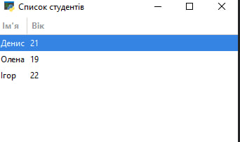
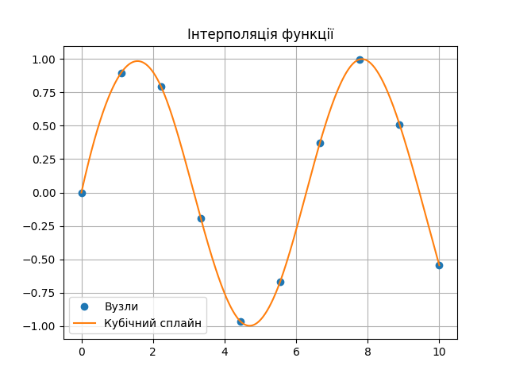
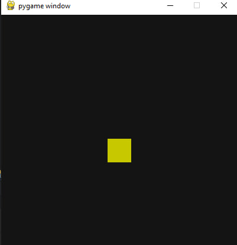
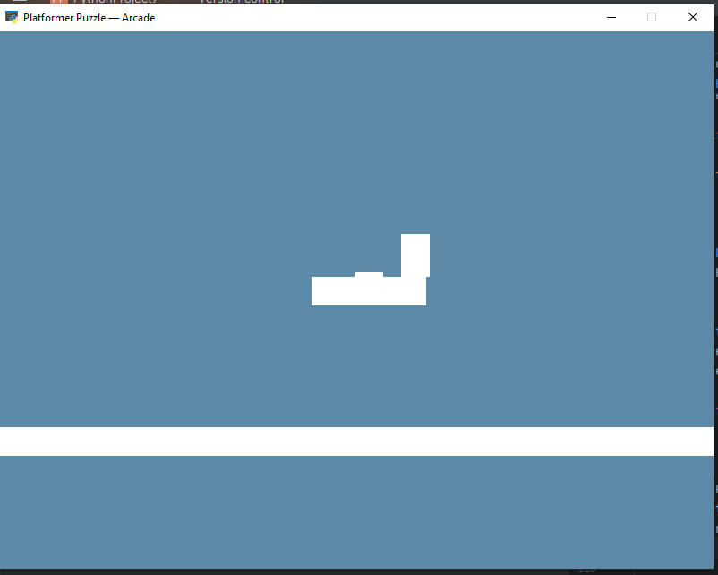
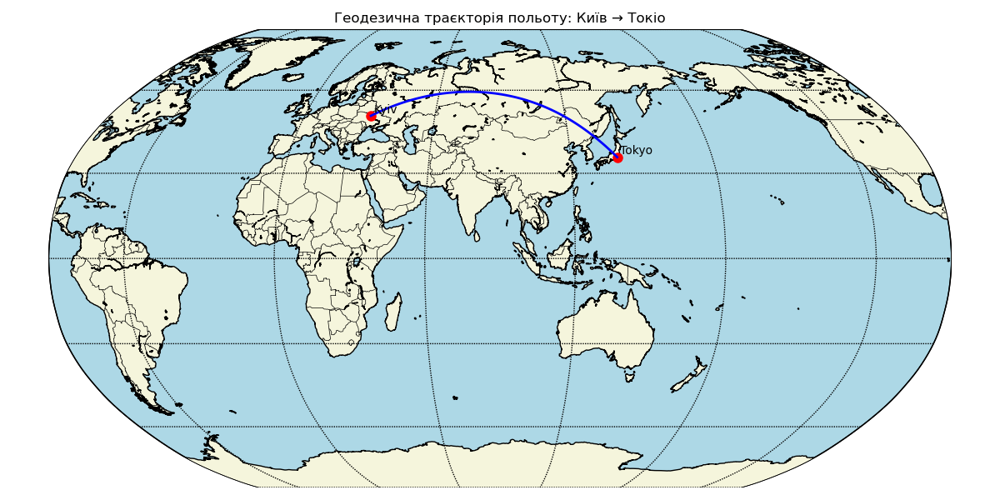
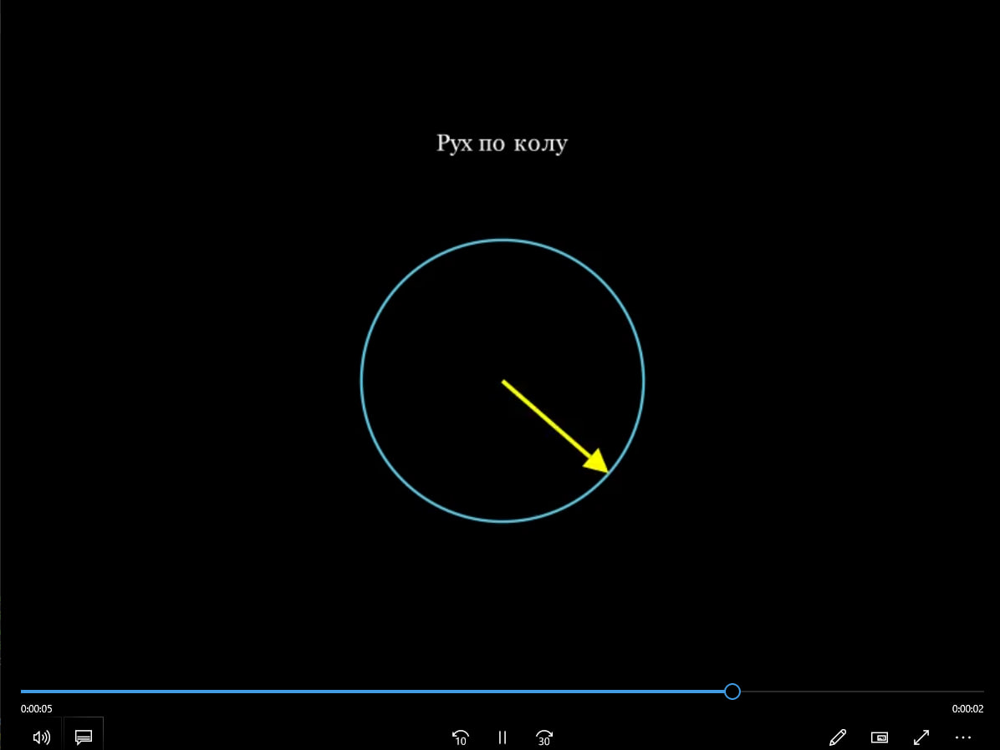

1. Зображення + кнопка для його заміни
import gi
gi.require_version("Gtk", "3.0")
from gi.repository import Gtk
class ImageApp(Gtk.Window):
def __init__(self):
super().__init__(title="Зображення у GTK")
self.set_default_size(400, 300)
self.box = Gtk.Box(orientation=Gtk.Orientation.VERTICAL, spacing=10)
self.add(self.box)
self.image_path_1 = r"E:\NewFolder\image.jpg"
self.image_path_2 = r"E:\NewFolder\new image.jpg"
self.image = Gtk.Image.new_from_file(self.image_path_1)
self.box.pack_start(self.image, True, True, 0)
self.button = Gtk.Button(label="Змінити зображення")
self.button.connect("clicked", self.change_image)
self.box.pack_start(self.button, False, False, 0)
def change_image(self, widget):
self.image.set_from_file(self.image_path_2)
win = ImageApp()
win.connect("destroy", Gtk.main_quit)
win.show_all()
Gtk.main()
2. Таблиця зі списком (TreeView)
import gi
gi.require_version("Gtk", "3.0")
from gi.repository import Gtk
class TreeViewExample(Gtk.Window):
def __init__(self):
super().__init__(title="Список студентів")
self.set_default_size(300, 200)
self.store = Gtk.ListStore(str, int)
self.store.append(["Денис", 21])
self.store.append(["Олена", 19])
self.store.append(["Ігор", 22])
self.view = Gtk.TreeView(model=self.store)
for i, column_title in enumerate(["Ім'я", "Вік"]):
renderer = Gtk.CellRendererText()
column = Gtk.TreeViewColumn(column_title, renderer, text=i)
self.view.append_column(column)
scroll = Gtk.ScrolledWindow()
scroll.add(self.view)
self.add(scroll)
win = TreeViewExample()
win.connect("destroy", Gtk.main_quit)
win.show_all()
Gtk.main()

3. Вибір файлу та відображення імені
import gi
gi.require_version("Gtk", "3.0")
from gi.repository import Gtk
class FileChooserExample(Gtk.Window):
def __init__(self):
super().__init__(title="Вибір файлу")
self.set_default_size(400, 100)
box = Gtk.Box(orientation=Gtk.Orientation.VERTICAL, spacing=10)
self.add(box)
self.label = Gtk.Label(label="Файл ще не вибрано")
box.pack_start(self.label, True, True, 0)
button = Gtk.Button(label="Вибрати файл")
button.connect("clicked", self.open_dialog)
box.pack_start(button, False, False, 0)
def open_dialog(self, widget):
dialog = Gtk.FileChooserDialog(
title="Оберіть файл",
parent=self,
action=Gtk.FileChooserAction.OPEN,
)
dialog.add_buttons(Gtk.STOCK_CANCEL, Gtk.ResponseType.CANCEL,
Gtk.STOCK_OPEN, Gtk.ResponseType.OK)
response = dialog.run()
if response == Gtk.ResponseType.OK:
filename = dialog.get_filename()
self.label.set_text(f"Обраний файл: {filename}")
dialog.destroy()
win = FileChooserExample()
win.connect("destroy", Gtk.main_quit)
win.show_all()
Gtk.main()
4. Перемикачі (ToggleButton) + логіка
import gi
gi.require_version("Gtk", "3.0")
from gi.repository import Gtk
class ToggleButtonExample(Gtk.Window):
def __init__(self):
super().__init__(title="Перемикачі")
self.set_default_size(300, 150)
box = Gtk.Box(orientation=Gtk.Orientation.VERTICAL, spacing=10)
self.add(box)
self.toggle1 = Gtk.ToggleButton(label="Опція 1")
self.toggle1.connect("toggled", self.on_toggled)
box.pack_start(self.toggle1, True, True, 0)
self.toggle2 = Gtk.ToggleButton(label="Опція 2")
self.toggle2.connect("toggled", self.on_toggled)
box.pack_start(self.toggle2, True, True, 0)
self.label = Gtk.Label(label="Статус: ---")
box.pack_start(self.label, True, True, 0)
def on_toggled(self, button):
states = []
if self.toggle1.get_active():
states.append("Опція 1")
if self.toggle2.get_active():
states.append("Опція 2")
self.label.set_text(f"Статус: {', '.join(states) or '---'}")
win = ToggleButtonExample()
win.connect("destroy", Gtk.main_quit)
win.show_all()
Gtk.main()
5. Вікно з прогрес-баром (імітація процесу)
import gi
import time
gi.require_version("Gtk", "3.0")
from gi.repository import Gtk, GLib
class ProgressBarExample(Gtk.Window):
def __init__(self):
super().__init__(title="Прогрес бар")
self.set_default_size(300, 100)
self.progressbar = Gtk.ProgressBar()
self.add(self.progressbar)
GLib.timeout_add(100, self.on_timeout)
def on_timeout(self):
new_val = self.progressbar.get_fraction() + 0.01
if new_val > 1.0:
new_val = 0.0
self.progressbar.set_fraction(new_val)
self.progressbar.set_text(f"{int(new_val * 100)}%")
return True
win = ProgressBarExample()
win.connect("destroy", Gtk.main_quit)
win.show_all()
Gtk.main()
Наукова візуалізація: Matplotlib
1. Кілька функцій на одному графіку
import matplotlib.pyplot as plt
import numpy as np
x = np.linspace(0, 2*np.pi, 200)
y1 = np.sin(x)
y2 = np.cos(x)
y3 = np.sin(2*x)
plt.figure(figsize=(10, 5))
plt.plot(x, y1, label='sin(x)', linewidth=2)
plt.plot(x, y2, label='cos(x)', linewidth=2)
plt.plot(x, y3, label='sin(2x)', linestyle='--', linewidth=2)
plt.title('Графіки тригонометричних функцій')
plt.xlabel('x')
plt.ylabel('Значення')
plt.legend()
plt.grid(True)
plt.show()
2. Гістограма з нормальним розподілом
import matplotlib.pyplot as plt
import numpy as np
data = np.random.normal(loc=0, scale=1, size=1000)
plt.figure(figsize=(8, 5))
plt.hist(data, bins=30, density=True, color='skyblue', edgecolor='black')
plt.title('Гістограма нормального розподілу')
plt.xlabel('Значення')
plt.ylabel('Щільність ймовірності')
plt.grid(True)
plt.show()
3. Теплова карта (heatmap)
import matplotlib.pyplot as plt
import numpy as np
data = np.random.rand(10, 10)
plt.figure(figsize=(6, 5))
plt.imshow(data, cmap='viridis', interpolation='nearest')
plt.colorbar(label="Інтенсивність")
plt.title('Теплова карта')
plt.show()
4. 3D-поверхня
import matplotlib.pyplot as plt
import numpy as np
from mpl_toolkits.mplot3d import Axes3D
fig = plt.figure(figsize=(10, 6))
ax = fig.add_subplot(111, projection='3d')
X = np.linspace(-5, 5, 50)
Y = np.linspace(-5, 5, 50)
X, Y = np.meshgrid(X, Y)
Z = np.sin(np.sqrt(X**2 + Y**2))
surf = ax.plot_surface(X, Y, Z, cmap='plasma')
fig.colorbar(surf, ax=ax, shrink=0.5, aspect=10)
ax.set_title('3D поверхня: sin(√(x² + y²))')
plt.show()
5. Векторне поле (Quiver plot)
import matplotlib.pyplot as plt
import numpy as np
x = np.linspace(-2, 2, 20)
y = np.linspace(-2, 2, 20)
X, Y = np.meshgrid(x, y)
U = -Y
V = X
plt.figure(figsize=(6, 6))
plt.quiver(X, Y, U, V)
plt.title('Векторне поле: обертання')
plt.xlabel('X')
plt.ylabel('Y')
plt.grid(True)
plt.axis('equal')
plt.show()
Наукова візуалізація: Mayavi
1. 3D-поверхня (mesh surface)
from mayavi import mlab
import numpy as np
x, y = np.mgrid[-3:3:100j, -3:3:100j]
z = np.sin(x**2 + y**2)
mlab.surf(x, y, z, colormap='Spectral')
mlab.title("3D-surface: sin(x² + y²)")
mlab.show()
2. Об'ємна візуалізація (volume rendering)
from mayavi import mlab
import numpy as np
x, y, z = np.ogrid[-10:10:100j, -10:10:100j, -10:10:100j]
data = np.sin(x*y*z) / (x*y*z + 1e-9)
src = mlab.pipeline.scalar_field(data)
mlab.pipeline.volume(src)
mlab.title("Volumetric visualization")
mlab.show()
3. Векторне поле (візуалізація потоків)
from mayavi import mlab
import numpy as np
x, y, z = np.mgrid[-2:2:20j, -2:2:20j, -2:2:20j]
u = -y
v = x
w = np.zeros_like(z)
mlab.quiver3d(x, y, z, u, v, w, scale_factor=0.5)
mlab.title("Vector field")
mlab.show()
4. Contour3D (ізолінії в 3D)
from mayavi import mlab
import numpy as np
x, y, z = np.ogrid[-3:3:60j, -3:3:60j, -3:3:60j]
scalars = np.sin(x*y*z)
mlab.contour3d(scalars, contours=8, opacity=0.5)
mlab.title("Contour3D: sin(x*y*z)")
mlab.show()
5. Parametric 3D-спіраль
from mayavi import mlab
import numpy as np
t = np.linspace(0, 4 * np.pi, 1000)
x = np.sin(t)
y = np.cos(t)
z = t
mlab.plot3d(x, y, z, t, tube_radius=0.05, colormap='Accent')
mlab.title("3D-spiral")
mlab.show()
Наукова візуалізація: SciPy Visualization
1. Візуалізація рішення диференціального рівняння (ODE)
import numpy as np
from scipy.integrate import solve_ivp
import matplotlib.pyplot as plt
def dydt(t, y):
return -2 * y + np.sin(t)
sol = solve_ivp(dydt, [0, 10], [1.0], t_eval=np.linspace(0, 10, 200))
plt.plot(sol.t, sol.y[0], label="dy/dt = -2y + sin(t)")
plt.xlabel("Час")
plt.ylabel("y(t)")
plt.title("Розв'язок ODE")
plt.grid()
plt.legend()
plt.show()
2. 2D-фур'є-аналіз зображення + спектр
import numpy as np
import matplotlib.pyplot as plt
from scipy import ndimage
img = np.zeros((256, 256))
img[64:-64, 64:-64] = 255
img = ndimage.gaussian_filter(img, sigma=10)
rotated = ndimage.rotate(img, 45)
plt.figure(figsize=(10, 5))
plt.subplot(1, 2, 1)
plt.title("Original")
plt.imshow(img, cmap="gray")
plt.subplot(1, 2, 2)
plt.title("Rotated")
plt.imshow(rotated, cmap="gray")
plt.tight_layout()
plt.show()
3. Інтерполяція функції методом кубічних сплайнів
import numpy as np
import matplotlib.pyplot as plt
from scipy.interpolate import CubicSpline
x = np.linspace(0, 10, 10)
y = np.sin(x)
cs = CubicSpline(x, y)
x_fine = np.linspace(0, 10, 500)
y_fine = cs(x_fine)
plt.plot(x, y, 'o', label='Вузли')
plt.plot(x_fine, y_fine, label='Кубічний сплайн')
plt.legend()
plt.title("Інтерполяція функції")
plt.grid()
plt.show()

4. 3D-візуалізація функції (SciPy + matplotlib)
import numpy as np
import matplotlib.pyplot as plt
from mpl_toolkits.mplot3d import Axes3D
x = y = np.linspace(-3, 3, 100)
X, Y = np.meshgrid(x, y)
Z = np.sin(np.sqrt(X**2 + Y**2))
fig = plt.figure()
ax = fig.add_subplot(111, projection='3d')
surf = ax.plot_surface(X, Y, Z, cmap='viridis')
fig.colorbar(surf)
ax.set_title("3D-графік функції: sin(sqrt(x² + y²))")
plt.show()
5. Карта рівнів потенціалу (рішення рівняння Лапласа)
import numpy as np
import matplotlib.pyplot as plt
from scipy.ndimage import laplace
N = 100
V = np.zeros((N, N))
V[25:75, 25] = 1
V[25:75, 75] = -1
for _ in range(500):
V[1:-1, 1:-1] = 0.25 * (V[:-2, 1:-1] + V[2:, 1:-1] +
V[1:-1, :-2] + V[1:-1, 2:])
V[25:75, 25] = 1
V[25:75, 75] = -1
plt.imshow(V, cmap='coolwarm')
plt.colorbar(label="Потенціал")
plt.title("Карта потенціалу (Лаплас)")
plt.show()
Наукова візуалізація: Cartopy
1. Глобальна карта з різними проекціями
import matplotlib.pyplot as plt
import cartopy.crs as ccrs
projections = [ccrs.PlateCarree(), ccrs.Mollweide(), ccrs.Orthographic(0, 0)]
for i, proj in enumerate(projections):
fig = plt.figure(figsize=(6, 4))
ax = plt.axes(projection=proj)
ax.set_global()
ax.coastlines()
ax.gridlines(draw_labels=True)
ax.set_title(f"Проекція: {proj.__class__.__name__}", fontsize=12)
plt.savefig(f"map_projection_{i}.png")
plt.close()
2. Відображення траєкторії супутника над Землею
import matplotlib.pyplot as plt
import cartopy.crs as ccrs
import numpy as np
lons = np.linspace(-180, 180, 400)
lats = 20 * np.sin(np.radians(lons))
fig = plt.figure(figsize=(10, 5))
ax = plt.axes(projection=ccrs.PlateCarree())
ax.set_global()
ax.coastlines()
ax.gridlines(draw_labels=True)
ax.plot(lons, lats, 'r', transform=ccrs.Geodetic(), label='Супутник')
ax.set_title("Траєкторія супутника")
ax.legend()
plt.savefig("satellite_path.png")
plt.close()
3. Теплова карта температур на світовій мапі
import matplotlib.pyplot as plt
import numpy as np
import cartopy.crs as ccrs
lons = np.linspace(-180, 180, 100)
lats = np.linspace(-90, 90, 50)
lon2d, lat2d = np.meshgrid(lons, lats)
temps = 30 * np.cos(np.radians(lat2d)) # умовна температура
fig = plt.figure(figsize=(12, 6))
ax = plt.axes(projection=ccrs.PlateCarree())
cf = ax.contourf(lons, lats, temps, 60, transform=ccrs.PlateCarree(), cmap='coolwarm')
ax.coastlines()
ax.set_title("Глобальне розподілення температури")
plt.colorbar(cf, ax=ax, orientation='horizontal')
plt.savefig("temperature_map.png")
plt.close()
4. Потік вітру: векторне поле на карті
import matplotlib.pyplot as plt
import numpy as np
import cartopy.crs as ccrs
lons = np.linspace(-180, 180, 20)
lats = np.linspace(-90, 90, 10)
lon2d, lat2d = np.meshgrid(lons, lats)
u = np.cos(np.radians(lat2d)) # умовна складова вітру
v = np.sin(np.radians(lon2d))
fig = plt.figure(figsize=(12, 6))
ax = plt.axes(projection=ccrs.PlateCarree())
ax.quiver(lons, lats, u, v, transform=ccrs.PlateCarree(), color='blue')
ax.coastlines()
ax.set_title("Векторне поле вітру")
plt.savefig("wind_field.png")
plt.close()
5. Виділення окремої країни
import matplotlib.pyplot as plt
import cartopy.crs as ccrs
import cartopy.feature as cfeature
fig = plt.figure(figsize=(10, 6))
ax = plt.axes(projection=ccrs.PlateCarree())
ax.set_extent([22, 41, 43, 53], crs=ccrs.PlateCarree()) # межі України
ax.coastlines(resolution='10m')
ax.add_feature(cfeature.BORDERS, linestyle=':')
ax.add_feature(cfeature.LAND, edgecolor='black')
ax.add_feature(cfeature.OCEAN)
ax.gridlines(draw_labels=True)
ax.set_title("Карта України")
plt.savefig("ukraine_map.png")
plt.close()
Графіка для ігор: Pygame
1. 2D платформер з гравітацією, анімацією та колізією
import pygame
import os
pygame.init()
WIDTH, HEIGHT = 800, 600
win = pygame.display.set_mode((WIDTH, HEIGHT))
pygame.display.set_caption("2D Платформер")
clock = pygame.time.Clock()
GRAVITY = 0.5
FPS = 60
player = pygame.Rect(100, 500, 50, 50)
player_vel_y = 0
on_ground = False
platforms = [pygame.Rect(0, 580, 800, 20), pygame.Rect(300, 450, 200, 20), pygame.Rect(600, 350, 150, 20)]
def draw():
win.fill((30, 30, 30))
pygame.draw.rect(win, (0, 255, 0), player)
for plat in platforms:
pygame.draw.rect(win, (255, 255, 255), plat)
pygame.display.update()
run = True
while run:
clock.tick(FPS)
keys = pygame.key.get_pressed()
for event in pygame.event.get():
if event.type == pygame.QUIT:
run = False
if keys[pygame.K_LEFT]:
player.x -= 5
if keys[pygame.K_RIGHT]:
player.x += 5
if keys[pygame.K_SPACE] and on_ground:
player_vel_y = -10
on_ground = False
player_vel_y += GRAVITY
player.y += player_vel_y
on_ground = False
for plat in platforms:
if player.colliderect(plat) and player_vel_y >= 0:
player.y = plat.y - player.height
player_vel_y = 0
on_ground = True
draw()
pygame.quit()
2. Гравець і AI переслідувач
import pygame
import math
pygame.init()
win = pygame.display.set_mode((600, 400))
clock = pygame.time.Clock()
player = pygame.Rect(100, 100, 30, 30)
enemy = pygame.Rect(400, 300, 30, 30)
speed = 3
def move_enemy(enemy, player):
dx, dy = player.x - enemy.x, player.y - enemy.y
dist = math.hypot(dx, dy)
if dist > 0:
dx, dy = dx / dist, dy / dist
enemy.x += dx * 2
enemy.y += dy * 2
running = True
while running:
win.fill((30, 30, 30))
keys = pygame.key.get_pressed()
for e in pygame.event.get():
if e.type == pygame.QUIT:
running = False
if keys[pygame.K_LEFT]: player.x -= speed
if keys[pygame.K_RIGHT]: player.x += speed
if keys[pygame.K_UP]: player.y -= speed
if keys[pygame.K_DOWN]: player.y += speed
move_enemy(enemy, player)
pygame.draw.rect(win, (0, 255, 0), player)
pygame.draw.rect(win, (255, 0, 0), enemy)
pygame.display.flip()
clock.tick(60)
pygame.quit()
3. Гра-музикальна реакція – Блок стрибає по нотах
import pygame
import random
import os
pygame.init()
pygame.mixer.init()
screen = pygame.display.set_mode((400, 400))
clock = pygame.time.Clock()
os.chdir(r"E:\NewFolder")
jump_sounds = [
pygame.mixer.Sound("jump1.wav"),
pygame.mixer.Sound("jump2.wav"),
pygame.mixer.Sound("jump3.wav")
]
player = pygame.Rect(180, 300, 40, 40)
velocity = 0
gravity = 0.5
jump_power = -10
on_ground = True
def play_jump():
sound = random.choice(jump_sounds)
sound.play()
running = True
while running:
screen.fill((20, 20, 20))
for e in pygame.event.get():
if e.type == pygame.QUIT:
running = False
keys = pygame.key.get_pressed()
if keys[pygame.K_SPACE] and on_ground:
velocity = jump_power
on_ground = False
play_jump()
velocity += gravity
player.y += int(velocity)
if player.y >= 300:
player.y = 300
velocity = 0
on_ground = True
pygame.draw.rect(screen, (200, 200, 0), player)
pygame.display.flip()
clock.tick(60)
pygame.quit()

Графіка для ігор: Pyglet
1. Pyglet + OpenGL: 3D-сцена з керуванням камерою
import pyglet
from pyglet.window import key, mouse
from OpenGL.GL import *
from OpenGL.GLU import *
import math
import numpy as np
config = pyglet.gl.Config(double_buffer=True, depth_size=24)
window = pyglet.window.Window(width=800, height=600,
caption='FPS 3D Scene',
resizable=True,
config=config)
window.set_exclusive_mouse(True)
camera_pos = np.array([0.0, 1.8, 5.0])
yaw, pitch = 0.0, 0.0
mouse_sensitivity = 0.15
movement_speed = 5.0
keys_held = set()
scene_objects = []
object_colors = {}
def create_cube(x, y, z, size=1):
half = size / 2
vertices = [
(x - half, y - half, z - half), (x + half, y - half, z - half),
(x + half, y + half, z - half), (x - half, y + half, z - half),
(x - half, y - half, z + half), (x + half, y - half, z + half),
(x + half, y + half, z + half), (x - half, y + half, z + half),
]
return vertices
def draw_cube(vertices, color=(0.7, 0.7, 0.7)):
glBegin(GL_QUADS)
glColor3f(*color)
glVertex3f(*vertices[4])
glVertex3f(*vertices[5])
glVertex3f(*vertices[6])
glVertex3f(*vertices[7])
glVertex3f(*vertices[1])
glVertex3f(*vertices[0])
glVertex3f(*vertices[3])
glVertex3f(*vertices[2])
glVertex3f(*vertices[0])
glVertex3f(*vertices[4])
glVertex3f(*vertices[7])
glVertex3f(*vertices[3])
glVertex3f(*vertices[5])
glVertex3f(*vertices[1])
glVertex3f(*vertices[2])
glVertex3f(*vertices[6])
glVertex3f(*vertices[3])
glVertex3f(*vertices[7])
glVertex3f(*vertices[6])
glVertex3f(*vertices[2])
glVertex3f(*vertices[0])
glVertex3f(*vertices[1])
glVertex3f(*vertices[5])
glVertex3f(*vertices[4])
glEnd()
for i in range(-5, 6):
for j in range(-5, 6):
cube = create_cube(i, -0.5, j)
scene_objects.append(cube)
object_colors[id(cube)] = (0.7, 0.7, 0.7)
column_positions = [(2, 0, 2), (-2, 0, 2), (2, 0, -2), (-2, 0, -2)]
for x, y, z in column_positions:
for height in range(3):
cube = create_cube(x, y + height, z)
scene_objects.append(cube)
object_colors[id(cube)] = (0.2, 0.4, 1.0)
@window.event
def on_draw():
glClear(GL_COLOR_BUFFER_BIT | GL_DEPTH_BUFFER_BIT)
glMatrixMode(GL_PROJECTION)
glLoadIdentity()
gluPerspective(45, window.width / window.height, 0.1, 100.0)
glMatrixMode(GL_MODELVIEW)
glLoadIdentity()
dir_x = math.cos(math.radians(pitch)) * math.sin(math.radians(yaw))
dir_y = math.sin(math.radians(pitch))
dir_z = -math.cos(math.radians(pitch)) * math.cos(math.radians(yaw))
center = camera_pos + np.array([dir_x, dir_y, dir_z])
gluLookAt(
*camera_pos,
*center,
0.0, 1.0, 0.0
)
for obj in scene_objects:
draw_cube(obj, object_colors.get(id(obj), (1.0, 1.0, 1.0)))
@window.event
def on_resize(width, height):
glViewport(0, 0, width, height)
glMatrixMode(GL_PROJECTION)
glLoadIdentity()
gluPerspective(45, width / height, 0.1, 100.0)
glMatrixMode(GL_MODELVIEW)
return pyglet.event.EVENT_HANDLED
@window.event
def on_mouse_motion(x, y, dx, dy):
global yaw, pitch
yaw += dx * mouse_sensitivity
pitch += dy * mouse_sensitivity
pitch = max(-89.0, min(89.0, pitch))
@window.event
def on_key_press(symbol, modifiers):
keys_held.add(symbol)
if symbol == key.ESCAPE:
pyglet.app.exit()
@window.event
def on_key_release(symbol, modifiers):
if symbol in keys_held:
keys_held.remove(symbol)
def check_collision(new_pos):
for obj in scene_objects:
cube_center = np.array([(obj[0][0] + obj[1][0]) / 2,
(obj[0][1] + obj[3][1]) / 2,
(obj[0][2] + obj[4][2]) / 2])
cube_size = 1.0
dist = np.linalg.norm(new_pos - cube_center)
if dist < 1.2:
return True
return False
def update(dt):
global camera_pos
front = np.array([
math.cos(math.radians(pitch)) * math.sin(math.radians(yaw)),
0.0,
-math.cos(math.radians(pitch)) * math.cos(math.radians(yaw))
])
front /= np.linalg.norm(front)
right = np.cross(front, np.array([0.0, 1.0, 0.0]))
right /= np.linalg.norm(right)
velocity = movement_speed * dt
if key.W in keys_held:
new_pos = camera_pos + front * velocity
if not check_collision(new_pos):
camera_pos = new_pos
if key.S in keys_held:
new_pos = camera_pos - front * velocity
if not check_collision(new_pos):
camera_pos = new_pos
if key.A in keys_held:
new_pos = camera_pos - right * velocity
if not check_collision(new_pos):
camera_pos = new_pos
if key.D in keys_held:
new_pos = camera_pos + right * velocity
if not check_collision(new_pos):
camera_pos = new_pos
if key.SPACE in keys_held:
camera_pos[1] += velocity
if key.LSHIFT in keys_held:
camera_pos[1] -= velocity
glEnable(GL_DEPTH_TEST)
glClearColor(0.1, 0.1, 0.1, 1.0)
pyglet.clock.schedule(update)
pyglet.app.run()
2. RTS-гра (Real-Time Strategy) створенням юнітів і простим AI
import pyglet
from pyglet.window import mouse, key
import numpy as np
import random
import math
window = pyglet.window.Window(800, 600, caption="RTS-гра на Pyglet")
batch = pyglet.graphics.Batch()
unit_speed = 100
enemy_speed = 40
units = []
enemies = []
selected_unit = None
class Unit:
def __init__(self, x, y):
self.sprite = pyglet.shapes.Circle(x, y, 10, color=(50, 200, 50), batch=batch)
self.target = None
def update(self, dt):
if self.target:
dx, dy = self.target[0] - self.sprite.x, self.target[1] - self.sprite.y
dist = math.hypot(dx, dy)
if dist < 2:
self.target = None
return
dx, dy = dx / dist, dy / dist
self.sprite.x += dx * unit_speed * dt
self.sprite.y += dy * unit_speed * dt
def is_clicked(self, x, y):
return math.hypot(self.sprite.x - x, self.sprite.y - y) < self.sprite.radius + 5
def set_selected(self, selected=True):
self.sprite.color = (0, 255, 0) if selected else (50, 200, 50)
class Enemy:
def __init__(self):
x, y = random.randint(0, 800), 600
self.sprite = pyglet.shapes.Circle(x, y, 10, color=(200, 50, 50), batch=batch)
def update(self, dt):
if units:
target_unit = min(units, key=lambda u: math.hypot(self.sprite.x - u.sprite.x, self.sprite.y - u.sprite.y))
dx = target_unit.sprite.x - self.sprite.x
dy = target_unit.sprite.y - self.sprite.y
dist = math.hypot(dx, dy)
if dist > 1:
dx, dy = dx / dist, dy / dist
self.sprite.x += dx * enemy_speed * dt
self.sprite.y += dy * enemy_speed * dt
@window.event
def on_mouse_press(x, y, button, modifiers):
global selected_unit
if button == mouse.LEFT:
selected_unit = None
for u in units:
if u.is_clicked(x, y):
selected_unit = u
break
for u in units:
u.set_selected(u == selected_unit)
elif button == mouse.RIGHT and selected_unit:
selected_unit.target = (x, y)
@window.event
def on_key_press(symbol, modifiers):
if symbol == key.SPACE:
new_unit = Unit(random.randint(50, 750), random.randint(50, 550))
units.append(new_unit)
if symbol == key.E:
enemies.append(Enemy())
if symbol == key.ESCAPE:
pyglet.app.exit()
@window.event
def on_draw():
window.clear()
batch.draw()
def update(dt):
for u in units:
u.update(dt)
for e in enemies:
e.update(dt)
to_remove_units = []
to_remove_enemies = []
attack_map = {}
for e in enemies:
for u in units:
dist = math.hypot(e.sprite.x - u.sprite.x, e.sprite.y - u.sprite.y)
if dist < 15:
if u not in attack_map:
attack_map[u] = []
attack_map[u].append(e)
for u, attackers in attack_map.items():
if len(attackers) == 1:
to_remove_units.append(u)
to_remove_enemies.append(attackers[0])
elif len(attackers) > 1:
to_remove_units.append(u)
for u in to_remove_units:
if u in units:
units.remove(u)
u.sprite.delete()
for e in to_remove_enemies:
if e in enemies:
enemies.remove(e)
e.sprite.delete()
pyglet.clock.schedule_interval(update, 1 / 60.0)
pyglet.app.run()
3. Ритм-гра в стилі “Guitar Hero”
import pyglet
from pyglet.window import key
import random
window = pyglet.window.Window(800, 600, caption="Rhythm Hero")
batch = pyglet.graphics.Batch()
lanes = ['A', 'S', 'D', 'F']
lane_keys = {
key.A: 0,
key.S: 1,
key.D: 2,
key.F: 3
}
lane_x_positions = [150, 300, 450, 600]
note_speed = 200
hit_zone_y = 100
hit_tolerance = 30
notes = []
score = 0
font = pyglet.font.load('Arial', 16)
class Note:
def __init__(self, lane_index):
self.lane = lane_index
self.x = lane_x_positions[lane_index]
self.y = 600
self.hit = False
self.sprite = pyglet.shapes.Rectangle(
self.x - 25, self.y, 50, 20,
color=(0, 255, 255),
batch=batch
)
def update(self, dt):
self.y -= note_speed * dt
self.sprite.y = self.y
def is_in_hit_zone(self):
return abs(self.y - hit_zone_y) < hit_tolerance
def is_missed(self):
return self.y < hit_zone_y - hit_tolerance
@window.event
def on_draw():
window.clear()
batch.draw()
for i, x in enumerate(lane_x_positions):
hit_zone = pyglet.shapes.Rectangle(x - 25, hit_zone_y - 10, 50, 20, color=(255, 255, 0))
hit_zone.draw()
score_label = pyglet.text.Label(f"Score: {score}", font_size=18, x=10, y=570)
score_label.draw()
instruction = pyglet.text.Label("Натискай A S D F вчасно!", x=10, y=540)
instruction.draw()
@window.event
def on_key_press(symbol, modifiers):
global score
if symbol in lane_keys:
lane = lane_keys[symbol]
for note in notes:
if note.lane == lane and note.is_in_hit_zone() and not note.hit:
note.hit = True
score += 1
note.sprite.delete()
notes.remove(note)
break
def update(dt):
for note in notes:
note.update(dt)
for note in notes[:]:
if note.is_missed():
notes.remove(note)
note.sprite.delete()
def spawn_note(dt):
new_lane = random.randint(0, 3)
notes.append(Note(new_lane))
pyglet.clock.schedule_interval(update, 1 / 60.0)
pyglet.clock.schedule_interval(spawn_note, 1.0)
pyglet.app.run()
Графіка для ігор: Arcade
1. Shoot'em up — гра в стилі космічного шутера
import arcade
import random
import os
SCREEN_WIDTH = 800
SCREEN_HEIGHT = 600
SCREEN_TITLE = "Space Shooter — Arcade"
PLAYER_SPEED = 5
BULLET_SPEED = 10
ENEMY_SPEED = 2
POWERUP_SPEED = 1
class SpaceShooter(arcade.Window):
def __init__(self):
super().__init__(SCREEN_WIDTH, SCREEN_HEIGHT, SCREEN_TITLE)
self.player_sprite = None
self.player_list = None
self.bullet_list = None
self.enemy_list = None
self.powerup_list = None
self.score = 0
self.lives = 3
self.fire_power = 1
self.assets_path = r"C:\Users\38067\Desktop\assets"
arcade.set_background_color(arcade.color.BLACK)
def setup(self):
self.player_list = arcade.SpriteList()
self.bullet_list = arcade.SpriteList()
self.enemy_list = arcade.SpriteList()
self.powerup_list = arcade.SpriteList()
self.player_sprite = arcade.Sprite(os.path.join(self.assets_path, "player.png"))
self.player_sprite.scale = 0.5
self.player_sprite.center_x = SCREEN_WIDTH // 2
self.player_sprite.center_y = 50
self.player_list.append(self.player_sprite)
arcade.schedule(self.spawn_enemy, 1.0)
arcade.schedule(self.spawn_powerup, 10.0)
def spawn_enemy(self, delta_time):
enemy = arcade.Sprite(os.path.join(self.assets_path, "enemy.png"))
enemy.scale = 0.5
enemy.center_x = random.randint(20, SCREEN_WIDTH - 20)
enemy.center_y = SCREEN_HEIGHT + 30
enemy.change_y = -ENEMY_SPEED
self.enemy_list.append(enemy)
def spawn_powerup(self, delta_time):
power = arcade.Sprite(os.path.join(self.assets_path, "powerup.png"))
power.scale = 0.2
power.center_x = random.randint(20, SCREEN_WIDTH - 20)
power.center_y = SCREEN_HEIGHT + 30
power.change_y = -POWERUP_SPEED
self.powerup_list.append(power)
def on_draw(self):
self.clear()
self.player_list.draw()
self.bullet_list.draw()
self.enemy_list.draw()
self.powerup_list.draw()
arcade.draw_text(f"Score: {self.score}", 10, 570, arcade.color.WHITE, 16)
arcade.draw_text(f"Lives: {self.lives}", 10, 550, arcade.color.WHITE, 16)
def on_update(self, delta_time):
self.player_list.update()
self.bullet_list.update()
self.enemy_list.update()
self.powerup_list.update()
for bullet in self.bullet_list:
if bullet.top > SCREEN_HEIGHT:
bullet.remove_from_sprite_lists()
for bullet in self.bullet_list:
hit_list = arcade.check_for_collision_with_list(bullet, self.enemy_list)
if hit_list:
bullet.remove_from_sprite_lists()
for enemy in hit_list:
enemy.remove_from_sprite_lists()
self.score += 1
for enemy in self.enemy_list:
if arcade.check_for_collision(enemy, self.player_sprite):
enemy.remove_from_sprite_lists()
self.lives -= 1
if self.lives <= 0:
arcade.close_window()
for power in self.powerup_list:
if arcade.check_for_collision(power, self.player_sprite):
power.remove_from_sprite_lists()
self.fire_power = 2
arcade.schedule(self.reset_power, 10.0)
def reset_power(self, dt):
self.fire_power = 1
arcade.unschedule(self.reset_power)
def on_key_press(self, key, modifiers):
if key == arcade.key.LEFT:
self.player_sprite.change_x = -PLAYER_SPEED
elif key == arcade.key.RIGHT:
self.player_sprite.change_x = PLAYER_SPEED
elif key == arcade.key.SPACE:
self.shoot()
def on_key_release(self, key, modifiers):
if key in (arcade.key.LEFT, arcade.key.RIGHT):
self.player_sprite.change_x = 0
def shoot(self):
if self.fire_power == 1:
bullet = arcade.Sprite(os.path.join(self.assets_path, "laser.jpg"))
bullet.scale = 0.03
bullet.center_x = self.player_sprite.center_x
bullet.center_y = self.player_sprite.top
bullet.change_y = BULLET_SPEED
bullet.angle = -90
self.bullet_list.append(bullet)
elif self.fire_power == 2:
for offset in [-15, 15]:
bullet = arcade.Sprite(os.path.join(self.assets_path, "laser.jpg"))
bullet.scale = 0.03
bullet.center_x = self.player_sprite.center_x + offset
bullet.center_y = self.player_sprite.top
bullet.change_y = BULLET_SPEED
bullet.angle = -90
self.bullet_list.append(bullet)
if __name__ == "__main__":
game = SpaceShooter()
game.setup()
arcade.run()
2. Tower Defense
import arcade
import math
import random
SCREEN_WIDTH = 800
SCREEN_HEIGHT = 600
SCREEN_TITLE = "Tower Defense"
ENEMY_SPEED = 10
BULLET_SPEED = 15
TOWER_RANGE = 150
TOWER_FIRE_RATE = 0.8
LIVES = 5
class Enemy(arcade.SpriteSolidColor):
def __init__(self, path_points):
super().__init__(20, 20, arcade.color.RED)
self.path = path_points
self.path_index = 0
self.center_x, self.center_y = self.path[0]
self.health = 100
self.alive = True
def on_update(self, delta_time):
if not self.alive:
return
if self.path_index + 1 >= len(self.path):
return
dest_x, dest_y = self.path[self.path_index + 1]
dx = dest_x - self.center_x
dy = dest_y - self.center_y
distance = math.hypot(dx, dy)
movement_distance = ENEMY_SPEED * delta_time
if distance <= movement_distance:
self.center_x = dest_x
self.center_y = dest_y
self.path_index += 1
else:
dx /= distance
dy /= distance
self.center_x += dx * movement_distance
self.center_y += dy * movement_distance
class Tower(arcade.SpriteSolidColor):
def __init__(self, x, y):
super().__init__(40, 40, arcade.color.BLUE)
self.center_x = x
self.center_y = y
self.time_since_last_shot = 0
def on_update(self, delta_time):
self.time_since_last_shot += delta_time
def can_fire(self):
return self.time_since_last_shot >= TOWER_FIRE_RATE
def reset_fire_timer(self):
self.time_since_last_shot = 0
class Bullet(arcade.SpriteSolidColor):
def __init__(self, x, y, target: arcade.Sprite):
super().__init__(5, 5, arcade.color.YELLOW)
self.center_x = x
self.center_y = y
self.target = target
def on_update(self, delta_time):
if not self.target or not self.target.alive:
self.remove_from_sprite_lists()
return
dx = self.target.center_x - self.center_x
dy = self.target.center_y - self.center_y
dist = math.hypot(dx, dy)
movement_distance = BULLET_SPEED * delta_time
if dist <= movement_distance:
self.remove_from_sprite_lists()
return
else:
dx /= dist
dy /= dist
self.center_x += dx * movement_distance
self.center_y += dy * movement_distance
class TowerDefenseGame(arcade.Window):
def __init__(self):
super().__init__(SCREEN_WIDTH, SCREEN_HEIGHT, SCREEN_TITLE)
arcade.set_background_color(arcade.color.DARK_GREEN)
self.enemy_list = arcade.SpriteList()
self.tower_list = arcade.SpriteList()
self.bullet_list = arcade.SpriteList()
self.path = [
(0, 300), (200, 300), (200, 500),
(600, 500), (600, 100), (800, 100)
]
self.spawn_timer = 0
self.spawn_interval = 2.5 / 3
self.lives = LIVES
self.score = 0
def on_draw(self):
self.clear()
# Draw path
for i in range(len(self.path) - 1):
arcade.draw_line(*self.path[i], *self.path[i + 1], arcade.color.LIGHT_GRAY, 5)
self.enemy_list.draw()
self.tower_list.draw()
self.bullet_list.draw()
arcade.draw_text(f"Lives: {self.lives}", 10, 570, arcade.color.WHITE, 16)
arcade.draw_text(f"Score: {self.score}", 10, 550, arcade.color.WHITE, 16)
def on_update(self, delta_time):
self.spawn_timer += delta_time
if self.spawn_timer > self.spawn_interval:
self.spawn_timer = 0
self.enemy_list.append(Enemy(self.path))
for tower in self.tower_list:
tower.on_update(delta_time)
for enemy in self.enemy_list:
enemy.on_update(delta_time)
for bullet in self.bullet_list:
bullet.on_update(delta_time)
for enemy in self.enemy_list[:]:
if enemy.path_index == len(self.path) - 1:
enemy.remove_from_sprite_lists()
enemy.alive = False
self.lives -= 1
if self.lives <= 0:
print("Game Over!")
arcade.close_window()
for tower in self.tower_list:
if tower.can_fire():
target_enemy = None
min_dist = TOWER_RANGE + 1
for enemy in self.enemy_list:
if enemy.alive and enemy.path_index < len(enemy.path) - 1:
dist = arcade.get_distance_between_sprites(tower, enemy)
if dist <= TOWER_RANGE and dist < min_dist:
min_dist = dist
target_enemy = enemy
if target_enemy:
bullet = Bullet(tower.center_x, tower.center_y, target_enemy)
self.bullet_list.append(bullet)
tower.reset_fire_timer()
for bullet in self.bullet_list[:]:
hit_enemies = arcade.check_for_collision_with_list(bullet, self.enemy_list)
if hit_enemies:
bullet.remove_from_sprite_lists()
for enemy in hit_enemies:
if enemy.alive:
enemy.health -= 50
if enemy.health <= 0:
enemy.remove_from_sprite_lists()
enemy.alive = False
self.score += 1
def on_mouse_press(self, x, y, button, modifiers):
if button == arcade.MOUSE_BUTTON_LEFT:
new_tower = Tower(x, y)
self.tower_list.append(new_tower)
if __name__ == "__main__":
game = TowerDefenseGame()
arcade.run()
3. Платформер з гравітацією
import arcade
SCREEN_WIDTH = 800
SCREEN_HEIGHT = 600
SCREEN_TITLE = "Platformer Puzzle — Arcade"
PLAYER_SPEED = 4
GRAVITY = 1
JUMP_SPEED = 20
class PuzzleGame(arcade.Window):
def __init__(self):
super().__init__(SCREEN_WIDTH, SCREEN_HEIGHT, SCREEN_TITLE)
arcade.set_background_color(arcade.color.AIR_FORCE_BLUE)
self.player_list = None
self.wall_list = None
self.switch_list = None
self.door_list = None
self.player = None
self.physics_engine = None
self.door_open = False
self.camera = arcade.camera.Camera2D()
def setup(self):
self.player_list = arcade.SpriteList()
self.wall_list = arcade.SpriteList(use_spatial_hash=True)
self.switch_list = arcade.SpriteList()
self.door_list = arcade.SpriteList()
self.player = arcade.SpriteSolidColor(32, 48, arcade.color.BLUE)
self.player.center_x = 100
self.player.center_y = 150
self.player_list.append(self.player)
for x in range(0, 3000, 64):
wall = arcade.SpriteSolidColor(64, 32, arcade.color.BROWN)
wall.center_x = x
wall.center_y = 32
self.wall_list.append(wall)
platform = arcade.SpriteSolidColor(128, 32, arcade.color.DARK_BROWN)
platform.center_x = 400
platform.center_y = 200
self.wall_list.append(platform)
platform2 = arcade.SpriteSolidColor(200, 32, arcade.color.DARK_BROWN)
platform2.center_x = 1000
platform2.center_y = 300
self.wall_list.append(platform2)
switch = arcade.SpriteSolidColor(32, 10, arcade.color.YELLOW)
switch.center_x = 400
switch.center_y = 216
self.switch_list.append(switch)
door = arcade.SpriteSolidColor(40, 80, arcade.color.GRAY)
door.center_x = 1200
door.center_y = 96
self.door_list.append(door)
self.physics_engine = arcade.PhysicsEnginePlatformer(
self.player,
self.wall_list,
gravity_constant=GRAVITY
)
self.center_camera_to_player()
def on_draw(self):
self.clear()
self.camera.use()
self.wall_list.draw()
self.switch_list.draw()
self.door_list.draw()
self.player_list.draw()
def on_update(self, delta_time):
self.physics_engine.update()
self.center_camera_to_player()
if arcade.check_for_collision_with_list(self.player, self.switch_list):
self.door_open = True
for door in self.door_list:
door.remove_from_sprite_lists()
def on_key_press(self, key, modifiers):
if key == arcade.key.LEFT or key == arcade.key.A:
self.player.change_x = -PLAYER_SPEED
elif key == arcade.key.RIGHT or key == arcade.key.D:
self.player.change_x = PLAYER_SPEED
elif key == arcade.key.UP or key == arcade.key.W:
if self.physics_engine.can_jump():
self.player.change_y = JUMP_SPEED
def on_key_release(self, key, modifiers):
if key in (arcade.key.LEFT, arcade.key.RIGHT, arcade.key.A, arcade.key.D):
self.player.change_x = 0
def center_camera_to_player(self):
screen_center_x = self.player.center_x - self.camera.viewport_width / 12
screen_center_y = self.player.center_y - self.camera.viewport_height / 12
self.camera.position = (screen_center_x, screen_center_y)
if __name__ == "__main__":
game = PuzzleGame()
game.setup()
arcade.run()

Графіка для ігор: Cocos2d
1. 2D-пригода з декількома сценами
import cocos
from cocos.scenes import transitions
from cocos.text import Label
from pyglet.window import key
import os
import pyglet
pyglet.resource.path = [r"C:\Users\38067\Desktop\assetss"]
pyglet.resource.reindex()
class Player(cocos.sprite.Sprite):
def __init__(self, x, y):
super().__init__("player.png")
self.position = x, y
self.velocity_x = 0
self.speed = 200
def update(self, dt):
self.x += self.velocity_x * dt
class RoomLayer(cocos.layer.Layer):
is_event_handler = True
def __init__(self, room_name, has_npc=False, next_scene_class=None):
super().__init__()
self.room_name = room_name
self.has_npc = has_npc
self.next_scene_class = next_scene_class
self.player = Player(100, 100)
self.add(self.player)
self.label = Label(room_name, font_size=24, x=400, y=550, anchor_x='center')
self.add(self.label)
self.dialog_label = None
self.in_dialog = False
if has_npc:
self.npc = cocos.sprite.Sprite("npc.jpg", position=(600, 100))
self.add(self.npc)
else:
self.npc = None
self.schedule(self.update)
def on_key_press(self, symbol, modifiers):
if symbol == key.RIGHT:
self.player.velocity_x = self.player.speed
elif symbol == key.LEFT:
self.player.velocity_x = -self.player.speed
elif symbol == key.SPACE:
self.check_interaction()
elif symbol == key.ENTER:
if self.next_scene_class:
new_scene = cocos.scene.Scene(self.next_scene_class())
transition = transitions.FadeTransition(new_scene, duration=1.0)
cocos.director.director.replace(transition)
else:
print("Немає наступної кімнати для переходу.")
def on_key_release(self, symbol, modifiers):
if symbol in (key.RIGHT, key.LEFT):
self.player.velocity_x = 0
def check_interaction(self):
if self.in_dialog:
self.remove(self.dialog_label)
self.dialog_label = None
self.in_dialog = False
return
if self.npc and abs(self.player.x - self.npc.x) < 100:
self.dialog_label = Label("Привіт, мандрівнику! Натисни SPACE ще раз, щоб закрити діалог.", font_size=18,
x=self.npc.x, y=self.npc.y + 80,
anchor_x='center')
self.add(self.dialog_label)
self.in_dialog = True
elif self.player.x > 750 and self.next_scene_class:
pass
def update(self, dt):
self.player.update(dt)
if self.player.x > cocos.director.director.window.width - 50 and self.next_scene_class:
new_scene = cocos.scene.Scene(self.next_scene_class())
transition = transitions.FadeTransition(new_scene,
duration=1.0)
cocos.director.director.replace(transition)
class Room1(RoomLayer):
def __init__(self):
super().__init__("Кімната 1: Початок", has_npc=True, next_scene_class=Room2)
class Room2(RoomLayer):
def __init__(self):
super().__init__("Кімната 2: Наступний крок", has_npc=False, next_scene_class=None)
class MainMenu(cocos.layer.Layer):
is_event_handler = True
def __init__(self):
super().__init__()
label = Label("Натисни Enter, щоб почати пригоду", font_size=24, x=400, y=300, anchor_x='center')
self.add(label)
def on_key_press(self, symbol, modifiers):
if symbol == key.ENTER:
new_scene = cocos.scene.Scene(Room1())
transition = transitions.FadeTransition(new_scene, duration=1.0)
cocos.director.director.replace(transition)
def main():
cocos.director.director.init(width=800, height=600, caption="Cocos2d Adventure")
main_scene = cocos.scene.Scene(MainMenu())
cocos.director.director.run(main_scene)
if __name__ == "__main__":
main()
2. Гра "Змійка" (Snake)
import cocos
from cocos.layer import ColorLayer
from cocos.scene import Scene
from cocos.text import Label
from pyglet.window import key
import random
CELL_SIZE = 20
GRID_WIDTH = 30
GRID_HEIGHT = 20
SCREEN_WIDTH = GRID_WIDTH * CELL_SIZE
SCREEN_HEIGHT = GRID_HEIGHT * CELL_SIZE
DIRECTIONS = {
key.UP: (0, 1),
key.DOWN: (0, -1),
key.LEFT: (-1, 0),
key.RIGHT: (1, 0),
key.W: (0, 1),
key.S: (0, -1),
key.A: (-1, 0),
key.D: (1, 0)
}
class SnakeGame(ColorLayer):
is_event_handler = True
def __init__(self):
super().__init__(0, 0, 0, 255)
self.schedule_interval(self.update, 0.15)
self.snake = [(10, 10), (9, 10), (8, 10)]
self.snake_dir = (1, 0)
self.food = self.spawn_food()
self.score = 0
self.snake_segments = []
self.food_object = None
self.label = Label(f"Score: {self.score}", x=10, y=SCREEN_HEIGHT - 30, font_size=16, anchor_x="left")
self.add(self.label)
self.draw_game()
def spawn_food(self):
while True:
pos = (random.randint(0, GRID_WIDTH - 1), random.randint(0, GRID_HEIGHT - 1))
if pos not in self.snake:
return pos
def on_key_press(self, symbol, modifiers):
if symbol in DIRECTIONS:
new_dir = DIRECTIONS[symbol]
if (new_dir[0] * -1, new_dir[1] * -1) != self.snake_dir:
self.snake_dir = new_dir
def update(self, dt):
head_x, head_y = self.snake[0]
dx, dy = self.snake_dir
new_head = (head_x + dx, head_y + dy)
if (new_head in self.snake or
new_head[0] < 0 or new_head[0] >= GRID_WIDTH or
new_head[1] < 0 or new_head[1] >= GRID_HEIGHT):
self.unschedule(self.update)
game_over = Label("Гра завершена!", font_size=32, x=SCREEN_WIDTH // 2,
y=SCREEN_HEIGHT // 2, anchor_x="center")
self.add(game_over)
return
self.snake.insert(0, new_head)
if new_head == self.food:
self.score += 1
self.food = self.spawn_food()
self.label.element.text = f"Score: {self.score}"
else:
self.snake.pop()
self.draw_game()
def draw_game(self):
for segment_obj in self.snake_segments:
if segment_obj.parent:
self.remove(segment_obj)
self.snake_segments = []
if self.food_object and self.food_object.parent:
self.remove(self.food_object)
self.food_object = None
for i, (x, y) in enumerate(self.snake):
color = (0, 255, 0) if i == 0 else (50, 200, 50)
segment = cocos.layer.ColorLayer(color[0], color[1], color[2], 255,
width=CELL_SIZE, height=CELL_SIZE)
segment.position = x * CELL_SIZE, y * CELL_SIZE
self.add(segment)
self.snake_segments.append(segment)
fx, fy = self.food
apple = cocos.layer.ColorLayer(255, 0, 0, 255, width=CELL_SIZE, height=CELL_SIZE)
apple.position = fx * CELL_SIZE, fy * CELL_SIZE
self.add(apple)
self.food_object = apple
def main():
cocos.director.director.init(width=SCREEN_WIDTH, height=SCREEN_HEIGHT, caption="Snake — Cocos2d")
scene = Scene(SnakeGame())
cocos.director.director.run(scene)
if __name__ == "__main__":
main()
3. Flappy Bird
import cocos
import random
from pyglet.window import key
import pyglet
SCREEN_WIDTH = 400
SCREEN_HEIGHT = 600
GRAVITY = -500
JUMP_SPEED = 200
PIPE_SPEED = 100
PIPE_INTERVAL = 2.0
GAP_HEIGHT = 10
class Bird(cocos.sprite.Sprite):
def __init__(self):
image = pyglet.image.SolidColorImagePattern((255, 255, 0, 255)).create_image(30, 30)
super().__init__(image)
self.position = 100, SCREEN_HEIGHT // 2
self.velocity_y = 0
def update(self, dt):
self.velocity_y += GRAVITY * dt
self.y += self.velocity_y * dt
class PipePair(cocos.layer.Layer):
def __init__(self, x):
super().__init__()
gap_y = random.randint(150, SCREEN_HEIGHT - 150)
self.top = cocos.layer.ColorLayer(34, 139, 34, 255, width=60, height=SCREEN_HEIGHT)
self.top.position = x, gap_y + GAP_HEIGHT // 2 + SCREEN_HEIGHT // 2
self.add(self.top)
self.bottom = cocos.layer.ColorLayer(34, 139, 34, 255, width=60, height=SCREEN_HEIGHT)
self.bottom.position = x, gap_y - GAP_HEIGHT // 2 - SCREEN_HEIGHT
self.add(self.bottom)
self.scored = False
def update(self, dt):
self.top.x -= PIPE_SPEED * dt
self.bottom.x -= PIPE_SPEED * dt
def is_off_screen(self):
return self.top.x + self.top.width < 0
def passed_by(self, bird):
return not self.scored and self.top.x + self.top.width < bird.x
class FlappyLayer(cocos.layer.Layer):
is_event_handler = True
def __init__(self):
super().__init__()
self.bird = Bird()
self.add(self.bird)
self.pipes = []
self.score = 0
self.label = cocos.text.Label("0", font_size=36, x=SCREEN_WIDTH//2, y=SCREEN_HEIGHT - 50, anchor_x="center")
self.add(self.label)
self.schedule(self.update)
self.schedule_interval(self.spawn_pipe, PIPE_INTERVAL)
def spawn_pipe(self, dt):
pipe = PipePair(SCREEN_WIDTH + 100)
self.pipes.append(pipe)
self.add(pipe)
def on_key_press(self, symbol, modifiers):
if symbol in (key.SPACE, key.W, key.UP):
self.bird.velocity_y = JUMP_SPEED
def update(self, dt):
self.bird.update(dt)
if self.bird.y < 0 or self.bird.y > SCREEN_HEIGHT:
self.game_over()
return
for pipe in list(self.pipes):
pipe.update(dt)
if self.collides(self.bird, pipe.top) or self.collides(self.bird, pipe.bottom):
self.game_over()
return
if pipe.passed_by(self.bird):
self.score += 1
self.label.element.text = str(self.score)
pipe.scored = True
if pipe.is_off_screen():
self.remove(pipe)
self.pipes.remove(pipe)
def collides(self, bird, rect):
bird_box = bird.get_rect()
pipe_box = cocos.rect.Rect(rect.x, rect.y, rect.width, rect.height)
return bird_box.intersects(pipe_box)
def game_over(self):
self.unschedule(self.update)
self.unschedule(self.spawn_pipe)
game_over_label = cocos.text.Label("Game Over", font_size=36,
x=SCREEN_WIDTH//2, y=SCREEN_HEIGHT//2,
anchor_x="center", color=(255, 0, 0, 255))
self.add(game_over_label)
def main():
cocos.director.director.init(width=SCREEN_WIDTH, height=SCREEN_HEIGHT, caption="Flappy Bird")
scene = cocos.scene.Scene(FlappyLayer())
cocos.director.director.run(scene)
if __name__ == "__main__":
main()
Спеціалізовані бібліотеки: Manim
1. Геометрія з анімацією
from manim import *
class GeometryScene(Scene):
def construct(self):
circle = Circle(radius=1, color=BLUE).shift(LEFT * 3)
square = Square(side_length=2, color=GREEN).shift(RIGHT * 3)
triangle = Triangle().scale(1.5).set_color(RED)
self.play(Create(circle))
self.wait(1)
self.play(Transform(circle, square))
self.wait(1)
self.play(Transform(circle, triangle))
self.wait(1)
self.play(Rotate(circle, angle=PI), run_time=2)
self.play(FadeOut(circle))
2. побудова графіка функції f(x) = sin(x)
from manim import *
class SineGraph(Scene):
def construct(self):
axes = Axes(
x_range=[-4, 4],
y_range=[-1.5, 1.5],
x_length=8,
y_length=3,
axis_config={"include_numbers": False},
).to_edge(DOWN)
x_label = Text("x", font_size=24).next_to(axes.x_axis, RIGHT)
y_label = Text("f(x)", font_size=24).next_to(axes.y_axis, UP)
self.play(Create(axes), FadeIn(x_label), FadeIn(y_label))
self.wait(0.5)
graph = axes.plot(lambda x: np.sin(x), color=BLUE)
dot = Dot(color=YELLOW).move_to(graph.get_start())
tracer = always_redraw(lambda: Dot(color=YELLOW).move_to(dot.get_center()))
self.add(tracer)
self.play(Create(graph), run_time=2)
self.play(MoveAlongPath(dot, graph), run_time=4)
self.wait(1)
self.play(FadeOut(graph), FadeOut(dot), FadeOut(tracer), FadeOut(x_label), FadeOut(y_label))
3. Лінійне перетворення векторів
from manim import *
class LinearTransformScene(Scene):
def construct(self):
grid = NumberPlane(x_range=[-5, 5], y_range=[-5, 5])
self.play(Create(grid))
self.wait(0.5)
v1 = Vector([2, 1], color=BLUE)
v2 = Vector([-1, 2], color=GREEN)
self.play(GrowArrow(v1), GrowArrow(v2))
self.wait(1)
label1 = Text("v₁", font_size=24).next_to(v1.get_end(), RIGHT)
label2 = Text("v₂", font_size=24).next_to(v2.get_end(), LEFT)
self.play(Write(label1), Write(label2))
self.wait(1)
matrix = [[1, 1],
[0, 1]]
self.play(ApplyMatrix(matrix, grid), run_time=3)
self.play(ApplyMatrix(matrix, v1), ApplyMatrix(matrix, v2), run_time=2)
self.wait(2)
Спеціалізовані бібліотеки: Basemap
1. Світова карта з містами
import matplotlib.pyplot as plt
from mpl_toolkits.basemap import Basemap
fig = plt.figure(figsize=(10, 6))
m = Basemap(projection='mill', llcrnrlat=-60, urcrnrlat=80,
llcrnrlon=-180, urcrnrlon=180, resolution='c')
m.drawcoastlines()
m.drawcountries()
m.drawmapboundary(fill_color='lightblue')
m.fillcontinents(color='palegoldenrod', lake_color='lightblue')
m.drawparallels(range(-90, 91, 30), labels=[1, 0, 0, 0])
m.drawmeridians(range(-180, 181, 60), labels=[0, 0, 0, 1])
cities = {
"Kyiv": (30.52, 50.45),
"Tokyo": (139.69, 35.68),
"New York": (-74.00, 40.71),
}
for name, (lon, lat) in cities.items():
x, y = m(lon, lat)
m.plot(x, y, 'ro', markersize=5)
plt.text(x + 50000, y + 50000, name, fontsize=10, fontweight='bold')
plt.title("Світова карта з основними містами")
plt.tight_layout()
plt.show()
2. Температурна картограма
import matplotlib.pyplot as plt
from mpl_toolkits.basemap import Basemap
import numpy as np
fig = plt.figure(figsize=(12, 6))
ax = fig.add_subplot(111)
m = Basemap(projection='robin', lon_0=0, resolution='c', ax=ax)
m.drawcoastlines()
m.drawcountries()
m.drawmapboundary(fill_color='lightblue')
m.fillcontinents(color='lightyellow', lake_color='lightblue')
m.drawparallels(np.arange(-90, 91, 30))
m.drawmeridians(np.arange(-180, 181, 60))
temperature_data = [
("Kyiv", 30.52, 50.45, 18),
("Tokyo", 139.69, 35.68, 27),
("New York", -74.00, 40.71, 22),
("Cairo", 31.24, 30.04, 35),
("Sydney", 151.21, -33.87, 16),
("Rio", -43.17, -22.91, 26),
]
temps = [temp for _, _, _, temp in temperature_data]
norm = plt.Normalize(min(temps), max(temps))
cmap = plt.cm.hot
for name, lon, lat, temp in temperature_data:
x, y = m(lon, lat)
color = cmap(norm(temp))
m.scatter(x, y, s=200, c=[color], edgecolors='black', zorder=5)
plt.text(x + 50000, y + 50000, f"{name}\n{temp}°C", fontsize=9, color='black', ha='left', va='bottom')
sm = plt.cm.ScalarMappable(cmap=cmap, norm=norm)
sm.set_array([])
cax = fig.add_axes([0.88, 0.15, 0.02, 0.7])
plt.colorbar(sm, cax=cax, label="Температура, °C")
plt.title("Картограма температур по містах світу")
plt.show()
3. Геодезична траєкторія польоту
import matplotlib.pyplot as plt
from mpl_toolkits.basemap import Basemap
kyiv_lon, kyiv_lat = 30.52, 50.45
tokyo_lon, tokyo_lat = 139.69, 35.68
fig = plt.figure(figsize=(12, 6))
m = Basemap(projection='robin', lon_0=90, resolution='l')
m.drawcoastlines()
m.drawcountries()
m.fillcontinents(color='beige', lake_color='lightblue')
m.drawmapboundary(fill_color='lightblue')
m.drawparallels(range(-90, 91, 30))
m.drawmeridians(range(0, 361, 60))
kyiv_x, kyiv_y = m(kyiv_lon, kyiv_lat)
tokyo_x, tokyo_y = m(tokyo_lon, tokyo_lat)
m.plot(kyiv_x, kyiv_y, 'ro', markersize=8)
m.plot(tokyo_x, tokyo_y, 'ro', markersize=8)
plt.text(kyiv_x + 100000, kyiv_y + 100000, "Kyiv", fontsize=10)
plt.text(tokyo_x + 100000, tokyo_y + 100000, "Tokyo", fontsize=10)
m.drawgreatcircle(kyiv_lon, kyiv_lat, tokyo_lon, tokyo_lat, linewidth=2, color='blue')
plt.title("Геодезична траєкторія польоту: Київ → Токіо")
plt.tight_layout()
plt.show()

Спеціалізовані бібліотеки: Cartopy
1. Базова світова карта
import matplotlib.pyplot as plt
import cartopy.crs as ccrs
import cartopy.feature as cfeature
fig = plt.figure(figsize=(12, 6))
ax = plt.axes(projection=ccrs.Robinson())
ax.add_feature(cfeature.LAND, facecolor='lightgreen')
ax.add_feature(cfeature.OCEAN, facecolor='lightblue')
ax.add_feature(cfeature.BORDERS, linestyle=':', edgecolor='gray')
ax.add_feature(cfeature.COASTLINE)
ax.add_feature(cfeature.LAKES, alpha=0.5)
ax.add_feature(cfeature.RIVERS)
gl = ax.gridlines(draw_labels=True, linewidth=0.5, color='gray', alpha=0.5)
gl.top_labels = False
gl.right_labels = False
plt.title("Базова світова карта з Cartopy")
plt.tight_layout()
plt.show()
2. Траєкторія польоту Київ → Токіо
import matplotlib.pyplot as plt
import cartopy.crs as ccrs
import cartopy.feature as cfeature
from cartopy.geodesic import Geodesic
import numpy as np
kyiv = (30.52, 50.45)
tokyo = (139.69, 35.68)
kyiv_lon, kyiv_lat = kyiv
tokyo_lon, tokyo_lat = tokyo
fig = plt.figure(figsize=(12, 6))
ax = plt.axes(projection=ccrs.PlateCarree())
ax.set_global()
ax.add_feature(cfeature.LAND, facecolor='lightgray')
ax.add_feature(cfeature.OCEAN, facecolor='lightblue')
ax.add_feature(cfeature.BORDERS, linestyle=':')
ax.coastlines()
ax.plot(kyiv_lon, kyiv_lat, marker='o', color='red', markersize=5, transform=ccrs.PlateCarree(), label="Kyiv")
ax.text(kyiv_lon + 5, kyiv_lat + 3, "Kyiv", transform=ccrs.PlateCarree())
ax.plot(tokyo_lon, tokyo_lat, marker='o', color='red', markersize=5, transform=ccrs.PlateCarree(), label="Tokyo")
ax.text(tokyo_lon + 5, tokyo_lat + 3, "Tokyo", transform=ccrs.PlateCarree())
geod = Geodesic()
inverse_result = geod.inverse(kyiv, tokyo)
distance, initial_azimuth, _ = inverse_result[0]
num_points = 100
distances = np.linspace(0, distance, num_points)
direct_result = geod.direct(kyiv, initial_azimuth, distances)
lons = direct_result[:, 0]
lats = direct_result[:, 1]
ax.plot(lons, lats, color='blue', linewidth=2, transform=ccrs.PlateCarree(), label="Flight Path")
plt.title("Траєкторія польоту: Київ \u2192 Токіо (геодезична лінія)", fontsize=14)
plt.tight_layout()
plt.show()
3. Візуалізація землетрусів
import matplotlib.pyplot as plt
import cartopy.crs as ccrs
import cartopy.feature as cfeature
import numpy as np
earthquakes = [
(142.37, 38.30, 7.2),
(-72.33, -36.12, 8.8),
(95.98, 3.30, 9.1),
(178.09, -38.32, 7.1),
(30.52, 50.45, 4.5),
(-118.24, 34.05, 5.9),
]
magnitudes = [mag for _, _, mag in earthquakes]
cmap = plt.cm.viridis
norm = plt.Normalize(min(magnitudes), max(magnitudes))
fig = plt.figure(figsize=(12, 6))
ax = plt.axes(projection=ccrs.PlateCarree())
ax.set_global()
ax.add_feature(cfeature.LAND, facecolor='lightgray')
ax.add_feature(cfeature.OCEAN, facecolor='lightblue')
ax.add_feature(cfeature.BORDERS)
ax.coastlines()
for lon, lat, mag in earthquakes:
ax.scatter(
lon, lat,
s=mag**3,
color=cmap(norm(mag)),
alpha=0.8,
transform=ccrs.PlateCarree(),
edgecolors='black',
linewidth=0.5
)
sm = plt.cm.ScalarMappable(cmap=cmap, norm=norm)
sm.set_array([])
plt.colorbar(sm, ax=ax, label="Магнітуда землетрусу", orientation="vertical", shrink=0.6)
plt.title("Карта землетрусів (псевдо-дані)")
plt.tight_layout()
plt.show()
Спеціалізовані бібліотеки: Folium
1. Базова інтерактивна карта з маркерами
import folium
map_center = [40.0, 50.0]
my_map = folium.Map(location=map_center, zoom_start=2)
cities = [
("Kyiv", 50.45, 30.52, "Столиця України"),
("Tokyo", 35.68, 139.69, "Столиця Японії"),
("New York", 40.71, -74.00, "Місто в США"),
]
for name, lat, lon, desc in cities:
folium.Marker(
location=[lat, lon],
popup=f"{name}
{desc}",
tooltip=name,
icon=folium.Icon(color="blue", icon="info-sign")
).add_to(my_map)
my_map.save("map_with_markers.html")
print('map_with_markers.html')
2. Теплова карта
import folium
from folium.plugins import HeatMap
map_center = [48.0, 30.0]
my_map = folium.Map(location=map_center, zoom_start=2)
heat_data = [
[50.45, 30.52, 0.9],
[35.68, 139.69, 0.8],
[40.71, -74.00, 0.7],
[51.50, -0.12, 0.6],
[48.85, 2.35, 0.5],
[34.05, -118.24, 0.4],
[55.75, 37.61, 0.3],
]
HeatMap(heat_data, radius=25, blur=15, max_zoom=6).add_to(my_map)
my_map.save("heatmap.html")
print('heatmap.html')
3. Маршрут на карті (GPS-траєкторія)
import folium
from folium import PolyLine
map_center = [50.0, 15.0]
my_map = folium.Map(location=map_center, zoom_start=4)
route = [
("Kyiv", [50.45, 30.52]),
("Warsaw", [52.23, 21.01]),
("Berlin", [52.52, 13.40]),
("Paris", [48.85, 2.35]),
]
for name, coord in route:
folium.Marker(
location=coord,
popup=f"{name}",
tooltip=name,
icon=folium.Icon(color="green", icon="road")
).add_to(my_map)
path_coords = [coord for _, coord in route]
PolyLine(locations=path_coords, color="blue", weight=5, opacity=0.7).add_to(my_map)
my_map.save("route_map.html")
print('route_map.html')
Спеціалізовані бібліотеки: Blender Python API
1. Процедурна генерація набору кубів із градієнтом
import bpy
bpy.ops.wm.read_factory_settings(use_empty=True)
size = 1.0
spacing = 2.0
rows = cols = layers = 5
for x in range(rows):
for y in range(cols):
for z in range(layers):
loc = (x * spacing, y * spacing, z * spacing)
bpy.ops.mesh.primitive_cube_add(size=size, location=loc)
obj = bpy.context.view_layer.objects.active
factor = 1 + 0.2 * (x + y + z)
obj.scale = (factor, factor, factor)
mat = bpy.data.materials.new(name=f"Mat_{x}_{y}_{z}")
mat.use_nodes = True
bsdf = None
for node in mat.node_tree.nodes:
if node.type == 'BSDF_PRINCIPLED':
bsdf = node
break
if bsdf is None:
bsdf = mat.node_tree.nodes.new('ShaderNodeBsdfPrincipled')
output = mat.node_tree.nodes.get('Material Output')
mat.node_tree.links.new(bsdf.outputs['BSDF'], output.inputs['Surface'])
color = (x / (rows - 1), y / (cols - 1), z / (layers - 1), 1)
bsdf.inputs["Base Color"].default_value = color
obj.data.materials.append(mat)
2. Анімація кульки з гравітацією та відбиванням
import bpy
import mathutils
bpy.ops.wm.read_factory_settings(use_empty=True)
bpy.ops.mesh.primitive_uv_sphere_add(radius=1, location=(0, 0, 5))
ball = bpy.context.view_layer.objects.active # Отримуємо активний об'єкт через view_layer
ball.keyframe_insert(data_path="location", frame=1)
frames_up = 20
frames_down = 20
bounciness = 0.6
ground_z = 1.0
ball.location.z = 10
ball.keyframe_insert(data_path="location", frame=frames_up)
ball.location.z = ground_z
ball.keyframe_insert(data_path="location", frame=frames_up + frames_down)
ball.location.z = 5 * bounciness + ground_z
ball.keyframe_insert(data_path="location", frame=frames_up + frames_down + frames_down * bounciness)
for fcurve in ball.animation_data.action.fcurves:
for kp in fcurve.keyframe_points:
kp.interpolation = 'LINEAR'
3. Процедурний ландшафт з підняттям вершин (дисперсія)
import bpy
import bmesh
import random
import math
bpy.ops.wm.read_factory_settings(use_empty=True)
bpy.ops.mesh.primitive_grid_add(x_subdivisions=50, y_subdivisions=50, size=10)
plane = bpy.context.view_layer.objects.active
mesh = plane.data
bm = bmesh.new()
bm.from_mesh(mesh)
def noise(x, y):
return random.uniform(-1, 1)
for v in bm.verts:
# Координати у [0,1]
u = (v.co.x / 10 + 0.5)
w = (v.co.y / 10 + 0.5)
h = noise(u * 5, w * 5) * 2 # масштаб висоти
v.co.z = h
bm.to_mesh(mesh)
bm.free()
mat = bpy.data.materials.new("LandscapeMat")
mat.use_nodes = True
nodes = mat.node_tree.nodes
bsdf = None
for node in nodes:
if node.type == 'BSDF_PRINCIPLED':
bsdf = node
break
if bsdf is None:
bsdf = nodes.new(type='ShaderNodeBsdfPrincipled')
bsdf.inputs["Base Color"].default_value = (0.2, 0.8, 0.2, 1)
plane.data.materials.append(mat)
cam = bpy.data.objects.new("Camera", bpy.data.cameras.new("Camera"))
bpy.context.collection.objects.link(cam)
cam.location = (30, -30, 20)
cam.rotation_euler = (math.radians(60), 0, math.radians(45))
bpy.context.scene.camera = cam

Анімація: Manim
1. Анімація руху вектора по колу
from manim import *
class RotatingVector(Scene):
def construct(self):
circle = Circle(radius=2, color=BLUE)
vector = Arrow(ORIGIN, RIGHT * 2, buff=0, color=YELLOW)
label = Text("Рух по колу", font_size=24).to_edge(UP)
self.play(Create(circle), Write(label))
self.wait(0.5)
self.play(GrowArrow(vector))
self.wait(0.5)
self.play(Rotate(vector, angle=2 * PI, about_point=ORIGIN), run_time=4)
self.wait(1)

2. Анімація з масштабуванням і переміщенням об’єкта
from manim import *
class TransformShapes(Scene):
def construct(self):
square = Square(color=GREEN)
circle = Circle(color=BLUE)
circle.shift(RIGHT * 3)
label = Text("Трансформація", font_size=24).to_edge(UP)
self.play(Create(square), Write(label))
self.wait(0.5)
self.play(square.animate.shift(LEFT * 3), run_time=2)
self.play(Transform(square, circle), run_time=2)
self.play(square.animate.scale(1.5), run_time=1.5)
self.wait(1)
Анімація: Matplotlib.animation
1. Анімація синусоїди, що рухається
import numpy as np
import matplotlib.pyplot as plt
import matplotlib.animation as animation
fig, ax = plt.subplots()
x = np.linspace(0, 2 * np.pi, 100)
line, = ax.plot(x, np.sin(x))
def update(frame):
line.set_ydata(np.sin(x + frame / 10))
return line,
ani = animation.FuncAnimation(fig, update, frames=100, interval=50, blit=True)
plt.title("Анімація синусоїди")
plt.show()
2. Частинка, яка рухається по колу
import numpy as np
import matplotlib.pyplot as plt
import matplotlib.animation as animation
fig, ax = plt.subplots()
ax.set_aspect('equal')
ax.set_xlim(-1.2, 1.2)
ax.set_ylim(-1.2, 1.2)
point, = ax.plot([], [], 'ro', markersize=10)
circle = plt.Circle((0, 0), 1.0, fill=False, color='gray', linestyle='--')
ax.add_patch(circle)
def update(frame):
angle = 2 * np.pi * frame / 100
x = np.cos(angle)
y = np.sin(angle)
point.set_data([x], [y])
return point,
ani = animation.FuncAnimation(fig, update, frames=100, interval=50, blit=False)
plt.title("Рух по колу")
plt.show()
Анімація: Pillow (GIF-анімація)
1. Рухома кулька по горизонталі
from PIL import Image, ImageDraw
frames = []
width, height = 200, 100
ball_radius = 10
start_x_center = ball_radius
end_x_center = width - ball_radius
num_frames = 50
for i in range(num_frames):
ball_center_x = int(start_x_center + (end_x_center - start_x_center) * (i / (num_frames - 1)))
ball_center_y = height // 2
img = Image.new("RGB", (width, height), "white")
draw = ImageDraw.Draw(img)
draw.ellipse((ball_center_x - ball_radius, ball_center_y - ball_radius,
ball_center_x + ball_radius, ball_center_y + ball_radius), fill="red")
frames.append(img)
frames[0].save("ball.gif", save_all=True, append_images=frames[1:], duration=40, loop=0)
print("ball.gif")

2. Анімація кольорової хвилі
from PIL import Image, ImageDraw
import math
frames = []
width, height = 300, 100
for frame in range(60):
img = Image.new("RGB", (width, height), "white")
draw = ImageDraw.Draw(img)
for x in range(width):
y = int((math.sin((x + frame * 5) * 0.05) + 1) * height / 2)
draw.point((x, y), fill=(0, 0, 255))
frames.append(img)
frames[0].save("wave.gif", save_all=True, append_images=frames[1:], duration=30, loop=0)
print("wave.gif")

Інші: Cairo
1. Побудова кола, прямокутника та тексту
import cairo
WIDTH, HEIGHT = 400, 300
surface = cairo.ImageSurface(cairo.FORMAT_ARGB32, WIDTH, HEIGHT)
ctx = cairo.Context(surface)
ctx.set_source_rgb(1, 1, 1)
ctx.paint()
ctx.set_source_rgb(0.2, 0.4, 0.8)
ctx.arc(200, 150, 80, 0, 2 * 3.14)
ctx.fill()
ctx.set_source_rgb(0.2, 0.8, 0.2)
ctx.rectangle(50, 50, 100, 60)
ctx.fill()
ctx.set_source_rgb(0, 0, 0)
ctx.select_font_face("Arial", cairo.FONT_SLANT_NORMAL, cairo.FONT_WEIGHT_BOLD)
ctx.set_font_size(24)
ctx.move_to(100, 280)
ctx.show_text("Hello Cairo!")
surface.write_to_png("drawing1.png")
print("drawing1.png")
2. Малювання спіралі
import cairo
import math
WIDTH, HEIGHT = 400, 400
surface = cairo.ImageSurface(cairo.FORMAT_ARGB32, WIDTH, HEIGHT)
ctx = cairo.Context(surface)
ctx.set_source_rgb(1, 1, 1)
ctx.paint()
ctx.translate(WIDTH / 2, HEIGHT / 2)
ctx.set_source_rgb(1, 0, 0)
ctx.set_line_width(2)
angle = 0
radius = 1
ctx.move_to(0, 0)
while radius < 150:
x = radius * math.cos(angle)
y = radius * math.sin(angle)
ctx.line_to(x, y)
angle += 0.2
radius += 0.8
ctx.stroke()
surface.write_to_png("spiral.png")
print("spiral.png")
Інші: Aggdraw
1. Малювання фігур: коло, прямокутник і лінії
from PIL import Image
import aggdraw
img = Image.new("RGB", (400, 300), "white")
draw = aggdraw.Draw(img)
pen = aggdraw.Pen("black", 2)
brush_red = aggdraw.Brush("red")
brush_blue = aggdraw.Brush("blue")
draw.ellipse((100, 100, 200, 200), pen, brush_red)
draw.rectangle((250, 100, 350, 180), pen, brush_blue)
draw.line((50, 250, 350, 250), aggdraw.Pen("green", 4))
draw.flush()
img.save("aggdraw_shapes.png")
print("aggdraw_shapes.png")
2. Годинник з стрілками
from PIL import Image
import aggdraw
import math
width, height = 400, 400
center = (width // 2, height // 2)
radius = 150
img = Image.new("RGB", (width, height), "white")
draw = aggdraw.Draw(img)
pen_black = aggdraw.Pen("black", 2)
pen_red = aggdraw.Pen("red", 4)
brush_center = aggdraw.Brush("black")
draw.ellipse((center[0] - radius, center[1] - radius,
center[0] + radius, center[1] + radius),
pen_black)
for h in range(12):
angle = math.radians(h * 30)
x1 = center[0] + radius * math.cos(angle)
y1 = center[1] + radius * math.sin(angle)
x2 = center[0] + (radius - 10) * math.cos(angle)
y2 = center[1] + (radius - 10) * math.sin(angle)
draw.line((x1, y1, x2, y2), pen_black)
angle_hour = math.radians(-60)
xh = center[0] + 60 * math.cos(angle_hour)
yh = center[1] + 60 * math.sin(angle_hour)
draw.line((center[0], center[1], xh, yh), pen_red)
angle_min = math.radians(-180)
xm = center[0] + 90 * math.cos(angle_min)
ym = center[1] + 90 * math.sin(angle_min)
draw.line((center[0], center[1], xm, ym), pen_black)
draw.ellipse((center[0] - 4, center[1] - 4, center[0] + 4, center[1] + 4),
None, brush_center)
draw.flush()
img.save("aggdraw_clock.png")
print("aggdraw_clock.png")
Інші: SVGwrite
1. Прямокутник, коло та текст
import svgwrite
dwg = svgwrite.Drawing("example1_shapes.svg", size=("400px", "300px"))
dwg.add(dwg.rect(insert=(50, 50), size=(100, 60), fill="lightblue", stroke="black"))
dwg.add(dwg.circle(center=(250, 100), r=40, fill="orange", stroke="black"))
dwg.add(dwg.text("Привіт, SVG!", insert=(120, 200), font_size="24px", fill="green"))
dwg.save()
print("example1_shapes.svg")
2. Побудова координатної сітки + синусоїда
import svgwrite
import math
dwg = svgwrite.Drawing("example2_grid_wave.svg", size=("500px", "300px"))
for x in range(0, 500, 50):
dwg.add(dwg.line(start=(x, 0), end=(x, 300), stroke="lightgray"))
for y in range(0, 300, 50):
dwg.add(dwg.line(start=(0, y), end=(500, y), stroke="lightgray"))
dwg.add(dwg.line(start=(0, 150), end=(500, 150), stroke="black"))
dwg.add(dwg.line(start=(250, 0), end=(250, 300), stroke="black"))
points = []
for x in range(0, 500):
y = 150 - 50 * math.sin((x / 500) * 4 * math.pi)
points.append((x, y))
dwg.add(dwg.polyline(points=points, stroke="red", fill="none", stroke_width=2))
dwg.save()
print("example2_grid_wave.svg")